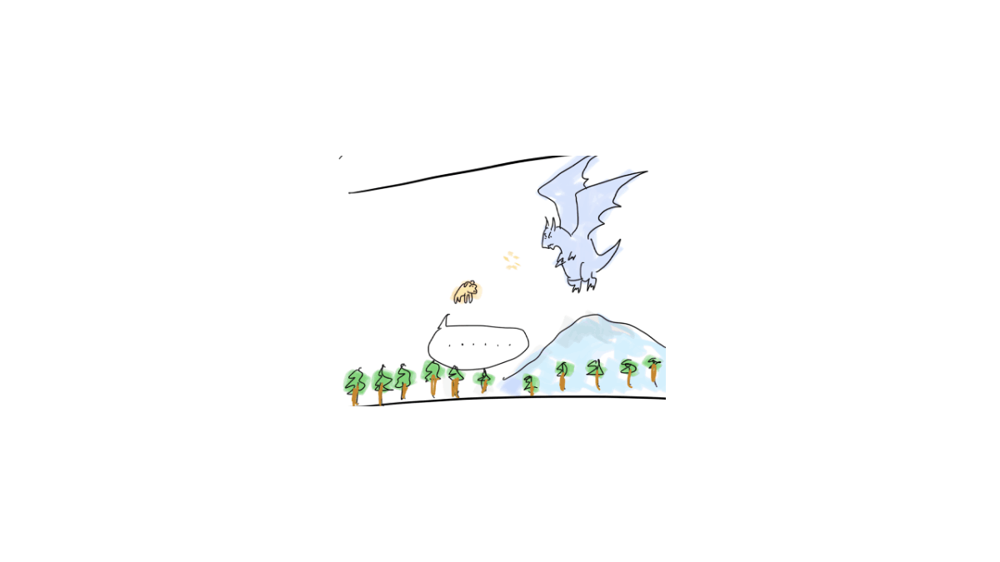
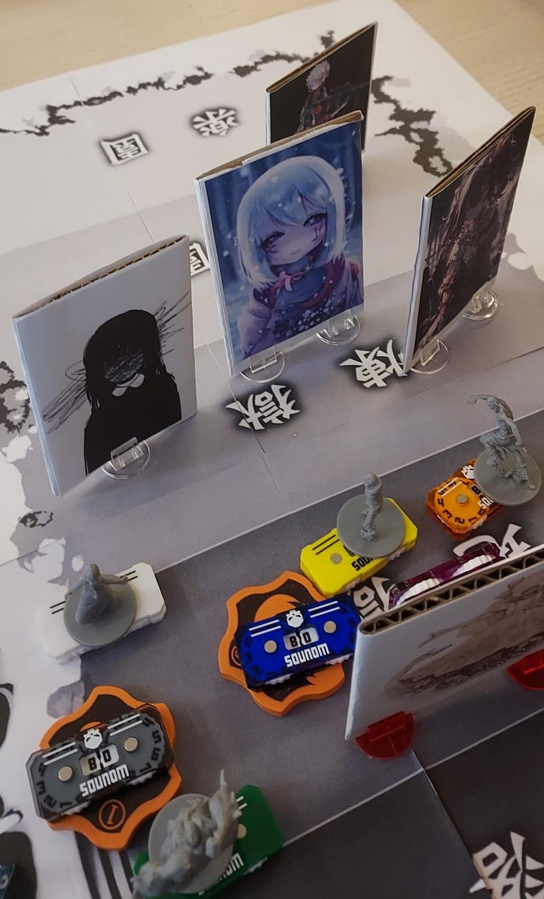

I have join a lot of different TRPG sessions and try on different TRPG systems, such as:
I was playing TRPG first because my firends had organize an event introducing TRPG.
I like having freedom to do whatever I want in the game, and it is very fun to do something totally unexpectable, both being the dm and the player.
After my first few sessions on Call of Cthulhu, I also try dnd. All sessions are online and dm could utilize online resources such as auto dice roller to help running the game.
I then thirsty to join more and also start attending offine sessions.

Let me share one of my campaign playing dnd.
My dad is a Iceborne dragon that hates fire magic, and I am talented at fire magic.
After I leave home, my dad found me and take me home after a hard fight.
My friends( Tiefling bard and undead flying donkey) flys to save me.
Donkey was not fast enough to get close to me, but bard jumps on the back of donkey.
Touching my hand and cast dimension door (teleport spell), we teleported to safety.
Instead leaving donkey alone in the sky staring the angry iceborne dragon.
I had tried lancer and nechronica, which are my first time playing trpg face to face and I seldom play online TRPG since then.
The atmosphere of playing TRPG with you seeing each other ehance the connections between players.
here is a photo I playing Nechronmica with my friends
